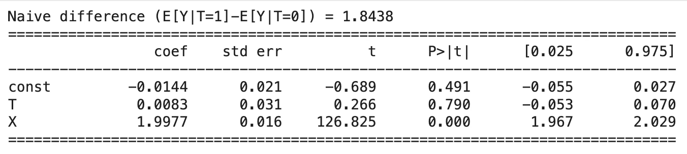

인과추론
Chapter 0. 왜 인과추론·설명가능 AI가 필요한가?
데이터 분석과 머신러닝이 널리 보급되면서 ”예측을 잘하는 모델”은 더 이상 특별한 기술이 아니게 되었다. 공개된 라이브러리와 자동화된 학습 절차를 이용하면, 비교적 짧은 시간 안에 높은 정확도를 얻는 일이 가능하다.
그러나 실제 현장에서 데이터 분석이 요구되는 이유는 단순히 값을 맞히기 위해서가 아니라, 어떤 결정을 내려야 하는 상황에서 근거를 제공하기 위해서인 경우가 많다.
정책을 설계하고, 의료적 처방을 선택하고, 금융에서 위험을 관리하며, 행정에서 지원 대상을 선정하는 일은 모두 ”결정”의 문제이며, 결정은 예측값 하나로 정당화되기 어렵다. 이 강의노트는 바로 그 지점, 즉 예측을 넘어 의사결정의 근거를 세우는 데 필요한 통계적 언어와 방법을 정리하기 위해 구성되었다.
예측(prediction)은 관측된 데이터에서 반복되는 패턴을 학습하여, 새로운 입력 X가 주어졌을 때 미관측 결과 Y를 정확히 맞히는 문제이다. 예측은 \(P(Y \mid X)\)라는 조건부분포를 학습하는 작업이며, 그 성과는 오차율, RMSE, AUC 같은 지표로 평가된다.
이때 중요한 것은 ”현재와 유사한 환경에서” 잘 맞히는 능력이다. 반면 현실의 많은 질문은 예측 자체가 아니라 개입의 효과를 묻는다. 예를 들어 ”이 정책을 시행하면 실업률이 줄어드는가”, ”이 프로그램에 참여시키면 소득이 늘어나는가”, ”이 약을 투여하면 증상이 호전되는가”와 같은 질문은 어떤 변수를 바꾸었을 때 결과가 어떻게 달라지는지를 묻는다.
이는 인과(causality)의 질문이며, 관측된 상관관계가 곧 인과효과를 의미하지 않는다. 따라서 예측 모델의 정확도가 높다는 사실만으로는 정책·처방·개입의 정당성이 확보되지 않는다.
인과추론(causal inference)은 ”바꾸면 달라지는가”를 묻는 질문을 통계적으로 다루는 체계이다. 관측자료에서 처치 T는 대개 무작위로 주어지지 않으며, 처치집단과 비교집단은 처치 이전부터 서로 다른 특성을 가질 수 있다.
이 차이는 교란(confounding)과 선택편의(selection bias)로 나타나며, 단순한 평균 차이 \(\mathbb{E}\lbrack Y \mid T = 1\rbrack - \mathbb{E}\lbrack Y \mid T = 0\rbrack\)는 보통 인과효과가 아니다. 인과추론은 잠재결과 Y(1), Y(0)라는 표준 언어를 통해 효과를 명확히 정의하고, 어떤 가정 하에서 평균처치효과(ATE), 처치집단 평균처치효과(ATT) 같은 정책적 요약치를 식별하고 추정하는 절차를 제공한다.
또한 회귀 조정, 성향점수, 차분의 차분(DiD)과 같은 방법들은 관측자료를 최대한 실험과 유사하게 만들기 위한 설계 도구로 이해되어야 하며, ”가정 + 설계 + 진단”이 하나의 패키지로 수행될 때 인과적 해석이 가능해진다.
한편 최근의 데이터 분석은 ML을 중심으로 빠르게 확장되고 있다. ML은 복잡한 패턴을 잘 학습하여 예측력을 극대화하지만, 이를 인과효과 추정에 그대로 적용하면 오히려 편향이 커질 수 있다. ML은 예측오차를 최소화하도록 설계되어 있으며, 관측자료의 선택편의가 존재하는 상황에서는 교란 구조를 더욱 정교하게 학습해 버릴 수도 있다.
또한 규제(regularization)나 변수선택은 예측에는 유리하지만, 인과모수 추정에서는 정규화 편향을 유발할 수 있다. 이러한 이유로 현대의 인과-ML 결합 방법들은 ”관심 인과모수”와 ”복잡한 함수 추정”을 분리한다.
예컨대 Causal Forest는 평균효과를 넘어 공변량에 따른 이질적 처치효과(CATE)를 추정함으로써 ”누구에게 정책이 더 잘 듣는가”를 탐색하게 해 주며, Double Machine Learning(DML)은 결과모형과 처치모형을 ML로 유연하게 추정하되 직교화와 교차적합을 통해 인과모수 추정을 편향에 둔감하게 만든다. 이는 예측의 강점을 인과추론에 안전하게 가져오기 위한 현대적 접근이다.
또한 모델이 실제 의사결정에 쓰이려면 ”왜 그런 예측이 나왔는가”에 대한 설명이 필요하다. 특히 정책·의료·금융 영역에서는 예측 결과에 대한 설명 책임과 이의제기 가능성이 중요하며, 이는 단순한 성능 지표로 대체될 수 없다. 설명가능 AI(XAI)는 feature importance, LIME, SHAP 같은 도구를 통해 모델이 무엇을 근거로 예측했는지를 해석 가능한 형태로 제공한다.
다만 XAI의 설명은 일반적으로 ”인과적 영향”이 아니라 ”예측 기여”를 보여주는 것이므로, 설명 결과를 곧바로 정책적 개입으로 연결하는 것은 위험할 수 있다. 따라서 XAI는 인과추론과 결합될 때 더 의미가 커지며, 적어도 모델의 판단 근거가 합리적인지, 설명이 안정적인지(샘플·시드·모형 변화에 민감하지 않은지) 점검하는 데 중요한 역할을 한다.
마지막으로 책임 있는 AI는 정확도만으로 끝나지 않는다. 데이터에는 표본편향, 측정편향, 레이블 편향, 역사적 편향이 포함될 수 있으며, 모델은 이를 그대로 학습하거나 심지어 증폭할 수 있다. 공정성(fairness)은 하나의 정의로 고정되지 않으며, 집단 간 오류율, 기회균등, 보정(calibration) 등 다양한 기준이 존재하고 동시에 만족되기 어려운 경우가 많다.
따라서 어떤 공정성 정의를 채택할지 자체가 가치 판단이자 정책 선택이 된다. 또한 모델이 제안하는 기준이 실제 행정·현장 절차에서 구현 가능한지, 최종 의사결정 책임이 누구에게 있는지, 이의제기 절차와 사후 모니터링 체계가 있는지까지 설계되어야 AI의 사용이 사회적으로 정당화될 수 있다.
이 강의노트의 목적은 예측의 기술을 넘어, 데이터를 기반으로 한 판단이 실무와 사회에서 책임 있게 사용될 수 있도록 통계적 사고의 틀을 제공하는 데 있다. 예측은 유용하지만, 개입의 정당성을 대신할 수 없다. 설명은 필요하지만, 인과를 자동으로 보장하지 않는다. 결국 AI의 마지막 책임은 인간의 해석과 제도적 설계에 있으며, 본 노트는 그 책임을 수행하기 위한 최소한의 개념·수식·방법·진단을 체계적으로 제시하고자 한다.
Chapter 1. 예측과 인과의 구분
1. 예측, 인과, 그리고 상관
예측(prediction)은 관측된 표본 \(\{(X_{i},Y_{i})\}_{i = 1}^{n}\)이 주어졌을 때, 새로운 개체의 설명변수 \(X = x\)가 관측되면 그에 대응하는 결과 Y를 최대한 정확히 맞히는 문제이다.
이때 ”정확히 맞힌다”는 말은 단순한 직관이 아니라, 보통 어떤 손실함수 \(L( \cdot , \cdot )\)를 정해 두고 기대손실을 최소화한다는 의미로 수식화된다. 예를 들어 연속형 결과에서는 제곱오차 손실 \(L(y,\widehat{y}) = (y - \widehat{y})^{2}\)를 많이 쓰며, 이 경우 이론적으로 최적 예측함수는 조건부기대 \(f^{*}(x) = \mathbb{E}\lbrack Y \mid X = x\rbrack\)이다.
즉, 예측의 핵심 대상은 ”현실에서 관측되는 확률법칙 하에서 \(X = x\)인 개체가 평균적으로 어떤 Y를 갖는가”라는 조건부분포 \(P(Y \mid X)\)이며, 회귀모형·랜덤포레스트·신경망 등은 결국 이를 근사하여 \(\widehat{f}(x) \approx \mathbb{E}\lbrack Y \mid X = x\rbrack\)가 되도록 학습하는 방법들이다.
따라서 예측이 성공한다는 것은 ”현재 관측된 데이터 생성 과정과 유사한 환경에서” 새 표본의 Y를 잘 맞힌다는 뜻이며, 예측 성능은 RMSE, MAE, AUC 같은 지표로 평가된다.
반면 인과(causality)는 관측된 연관성 자체가 아니라 ”개입을 했을 때” 결과가 어떻게 달라지는지를 묻는 문제이다. 이를 위해 처치(처리) 변수 \(T \in \{ 0,1\}\)를 도입하고, 잠재결과 \(Y(1),Y(0)\)를 정의한다. \(Y(1)\)은 어떤 개인이 처치를 받았을 때의 결과이고, \(Y(0)\)은 같은 개인이 처치를 받지 않았을 때의 결과이다.
인과효과는 본질적으로 두 세계의 차이로 정의되며 평균처치효과는 \(\text{ATE} = \mathbb{E}\lbrack Y(1) - Y(0)\rbrack\)로 쓴다. 여기서 핵심은 \(\mathbb{E}\lbrack Y \mid X = x\rbrack\)처럼 ”관측된 조건부분포”를 추정하는 것이 아니라, \(\mathbb{E}\lbrack Y(1)\rbrack,\mathbb{E}\lbrack Y(0)\rbrack\)처럼 ”개입으로 T를 설정했을 때의 결과”를 비교한다는 점이다.
이 차이는 do-표기법으로 \(\mathbb{E}\lbrack Y \mid do(T = 1)\rbrack - \mathbb{E}\lbrack Y \mid do(T = 0)\rbrack\)로 표현되며, 이는 단순한 조건화 \(\mathbb{E}\lbrack Y \mid T = 1\rbrack - \mathbb{E}\lbrack Y \mid T = 0\rbrack\)와 일반적으로 같지 않다.
상관관계가 정책 판단의 근거가 되지 못하는 이유는 관측자료에서 T가 대개 무작위로 주어지지 않기 때문이다. 예를 들어 어떤 정책 프로그램 참여 여부가 T라고 하면, 참여자는 비참여자와 비교해 원래부터 동기, 능력, 소득, 건강상태 같은 특성 X가 다를 가능성이 높다.
이때 단순 비교값 \(\Delta_{\text{obs}} = \mathbb{E}\lbrack Y \mid T = 1\rbrack - \mathbb{E}\lbrack Y \mid T = 0\rbrack\)은 프로그램 효과뿐 아니라 집단 구성의 차이를 함께 반영한다. 즉 X가 T와 Y에 동시에 영향을 주는 교란(confounding)이 존재하면, T와 Y 사이의 상관은 ”개입의 효과”가 아니라 ”선택된 사람들의 특성 차이”일 수 있다. 더 나아가 관측되지 않은 교란 U가 존재하면, 통제 가능한 X를 회귀에 넣거나 성향점수로 맞추더라도 편향이 남을 수 있다.
따라서 인과추론은 예측처럼 단순히 함수근사 문제로 끝나지 않고, 어떤 가정 하에서 어떤 양이 식별(identification)되는지, 그리고 그 가정이 현실에서 타당한지(진단·검증 가능성)를 함께 논의해야 한다.
정리하면 예측은 ”주어진 데이터 생성 과정에서 Y를 잘 맞히는 것”이 목적이며, 그때 중요한 것은 \(P(Y \mid X)\)의 정확한 근사이다. 반면 인과는 ”T를 바꾸면 Y가 바뀌는가”를 묻는 문제이며, 그때 중요한 것은 \(\mathbb{E}\lbrack Y \mid do(T = t)\rbrack\)를 정당하게 추론할 수 있는 설계와 가정이다.
예측에서 유용한 변수는 단지 Y와 강하게 연관된 변수이면 충분하지만, 정책에서 유효한 변수는 실제로 조작 가능한 레버이며 동시에 교란의 영향을 분리해 낼 수 있어야 한다. 이런 이유로 상관은 예측에서는 힘이 세지만, 정책·처방의 근거로 쓰이려면 인과적 해석을 가능하게 하는 추가 조건이 반드시 필요하다.
예측과 인과의 한 줄 수식 비교이다
예측은 관측된 세계에서의 조건부분포를 학습하는 문제이며, 목표는 새로운 x에 대해 \(\widehat{f}(x) \approx \mathbb{E}\lbrack Y \mid X = x\rbrack\)가 되도록 만드는 것이다. 반면 인과는 처치변수 T를 개입으로 설정했을 때의 결과를 비교하는 문제이며, 목표는 \(\mathbb{E}\lbrack Y \mid do(T = 1)\rbrack - \mathbb{E}\lbrack Y \mid do(T = 0)\rbrack\)를 정당하게 추정하는 것이다.
관측자료에서는 일반적으로 \(\mathbb{E}\lbrack Y \mid T = 1\rbrack - \mathbb{E}\lbrack Y \mid T = 0\rbrack \neq \mathbb{E}\lbrack Y \mid do(T = 1)\rbrack - \mathbb{E}\lbrack Y \mid do(T = 0)\rbrack\)가 성립하며, 그 이유는 교란(confounding)과 선택편의(selection bias)로 인해 처치집단과 비처치집단의 구성이 처치 이전부터 다르기 때문이다.
장학금 프로그램이 성적을 올리는가에 대한 논의이다
장학금 프로그램 참여 여부를 \(T \in \{ 0,1\}\), 학업 성적을 Y, 학업 동기·가정환경·기초학력 등을 X라고 하자. 관측자료에서 흔히 보는 사실은 장학금을 받은 학생이 평균 성적이 더 높다는 것이며, 이는 \(\mathbb{E}\lbrack Y \mid T = 1\rbrack > \mathbb{E}\lbrack Y \mid T = 0\rbrack\)
로 표현된다.
그러나 이 부등식만으로 ”장학금이 성적을 올린다”는 결론을 내리면 오류가 될 수 있다. 장학금을 받는 학생은 원래 동기나 기초학력이 높고(X가 큼), 그러한 특성 자체가 성적을 높이기 때문이다. 즉 \(X \rightarrow T\)와 \(X \rightarrow Y\)가 동시에 존재하는 교란 구조에서, 단순 평균 차이는 장학금의 효과와 학생 구성 차이가 섞인 값이다.
이 문제를 인과적으로 표현하면, 각 학생 i에 대해 ”장학금을 받았을 때의 성적” \(Y_{i}(1)\)과 ”받지 않았을 때의 성적” \(Y_{i}(0)\)을 정의하고, 평균처치효과는 \(\text{ATE} = \mathbb{E}\lbrack Y(1) - Y(0)\rbrack\)로 정의된다.
하지만 현실에서는 한 학생이 동시에 장학금을 받는 세계와 받지 않는 세계를 모두 경험할 수 없으므로 \(Y_{i}(1)\)과 \(Y_{i}(0)\)을 함께 관측할 수 없다. 따라서 단순히 \(\mathbb{E}\lbrack Y \mid T = 1\rbrack - \mathbb{E}\lbrack Y \mid T = 0\rbrack\)를 계산하는 것은 ATE를 직접 계산하는 것이 아니며, ATE를 얻기 위해서는 무작위배정(RCT)처럼 T를 설계로 통제하거나, 관측자료에서는 X를 충분히 통제하여 \((Y(1),Y(0))\bot T \mid X\)가 성립한다고 가정할 수 있어야 한다.
이 조건이 성립한다면 장학금 효과는 \(\text{ATE} = \mathbb{E}\lbrack\mathbb{E}\lbrack Y \mid T = 1,X\rbrack - \mathbb{E}\lbrack Y \mid T = 0,X\rbrack\rbrack\)로 식별되며, 회귀 조정이나 성향점수 방법은 이 식별식을 실제 데이터에서 구현하는 절차로 이해할 수 있다.
2. 예측 문제의 수식적 정식화
관측자료에서 예측의 목표는 일반적으로 조건부기대의 근사로 표현된다. 회귀 예측(연속형 Y)의 목표는 \(f^{*}(x) = \mathbb{E}\lbrack Y \mid X = x\rbrack\)를 잘 근사하는 함수 \(\widehat{f}(x)\)를 찾는 것이다.
분류 예측(이진형 \(Y \in \{ 0,1\}\))의 목표는 \(p^{*}(x) = \mathbb{P}(Y = 1 \mid X = x)\)를 잘 근사하는 \(\widehat{p}(x)\)를 찾는 것이다.
예측은 대개 어떤 손실함수 \(L( \cdot , \cdot )\)에 대해 기대위험을 최소화하는 형태로 쓴다. \(\widehat{f} = \arg\min_{f \in \mathcal{F}}\mathbb{E}\lbrack L(Y,f(X))\rbrack\), 여기서 중요한 점은\(\mathbb{E}\lbrack Y \mid X = x\rbrack\) 혹은 \(\mathbb{P}(Y = 1 \mid X = x)\)는 관측된 세계의 확률법칙에서 정의되는 양이라는 사실이다. 즉 ”현재 관측된 상태에서 X를 가진 사람은 평균적으로 Y가 어떠한가”를 말하는 양이다.
3. 인과 문제의 수식적 정식화
인과는 ”개입했을 때”를 명시해야 한다. 가장 표준적인 언어는 잠재결과이다. 처치변수 \(T \in \{ 0,1\}\)에 대해 \(Y(1)\)은 처치를 했을 때의 결과이고 \(Y(0)\)은 처치를 하지 않았을 때의 결과이다.
관측되는 결과는 한 개인에 대해 두 세계가 동시에 펼쳐질 수 없다는 점에서 출발한다. 처치변수 T는 개입을 받았는지 여부를 나타내며, T=1이면 처치를 받은 상태이고 T=0이면 처치를 받지 않은 상태이다.
잠재결과 Y(1)은 그 개인이 처치를 받았다고 가정했을 때 나타날 결과이고, Y(0)은 그 개인이 처치를 받지 않았다고 가정했을 때 나타날 결과이다. 현실에서는 한 개인이 처치를 ”받은 상태”와 ”받지 않은 상태”를 동시에 경험할 수 없으므로, 실제로 관측되는 결과 Y는 Y(1)과 Y(0) 중 하나만 된다.
이를 한 줄로 정리하면 \(Y = T \cdot Y(1) + (1 - T) \cdot Y(0)\)이며, T=1인 경우에는 Y=Y(1)만 관측되고 T=0인 경우에는 Y=Y(0)만 관측된다는 뜻이다.
개별 인과효과는 동일한 개인 i에 대해 ”처치를 했을 때”와 ”처치를 하지 않았을 때”의 결과 차이로 정의되며, \(\tau_{i} = Y_{i}(1) - Y_{i}(0)\)로 쓴다. 그러나 앞에서 보았듯이 현실에서는 한 개인에게서 \(Y_{i}(1)\)과 \(Y_{i}(0)\)을 동시에 관측할 수 없다.
처치를 받은 사람에게서는 \(Y_{i}(1)\)만 보이고 \(Y_{i}(0)\)은 보이지 않으며, 처치를 받지 않은 사람에게서는 \(Y_{i}(0)\)만 보이고 \(Y_{i}(1)\)은 보이지 않는다. 따라서 \(\tau_{i}\)는 두 값을 모두 알아야 계산할 수 있는데, 관측자료에서는 두 값 중 하나가 항상 결측이 되므로 개별 인과효과는 직접 관측 불가능한 양이 된다.
이 때문에 인과추론에서는 개별 효과를 그대로 계산하는 대신, 적절한 가정(예: 무작위배정, 또는 교란변수를 충분히 통제할 수 있다는 가정) 하에서 평균처치효과와 같은 집단 수준의 평균 효과를 추정하는 방향으로 문제를 설정하게 된다.
따라서 보통은 평균 효과를 추정한다. 평균처치효과(ATE)는 \(\text{ATE} = \mathbb{E}\lbrack Y(1) - Y(0)\rbrack\), 처치받은 집단 평균처치효과(ATT)는 \(\text{ATT} = \mathbb{E}\lbrack Y(1) - Y(0) \mid T = 1\rbrack\)이다. 인과 질문은 이처럼 ”T를 바꾸면 Y가 얼마나 변하는가”라는 대안적 세계의 비교로 정의되는 양이다.
4. ”상관 vs 개입”의 핵심 차이
상관(관측조건화): \(\mathbb{E}\lbrack Y \mid T = 1\rbrack - \mathbb{E}\lbrack Y \mid T = 0\rbrack\)
관측자료에서 흔히 계산하는 차이는 \(\Delta_{\text{obs}} = \mathbb{E}\lbrack Y \mid T = 1\rbrack - \mathbb{E}\lbrack Y \mid T = 0\rbrack\)이다. 이것은 ”처치집단과 비처치집단의 평균 결과 차이”이며, 예측이나 집단 비교에는 유용하다.
그러나 이 값은 일반적으로 ATE와 다르다. 왜냐하면 처치집단과 비처치집단은 보통 처치 이전부터 다르게 구성되어 있기 때문이다.
상관계수 관계: \(E\lbrack Y \mid T = 1\rbrack - E\lbrack Y \mid T = 0\rbrack = \frac{COV(T,Y)}{P(T = 1)P(T = 0)}\)
회귀분석 \(Y = \alpha + \beta T + \varepsilon\): \(\beta = \frac{COV(T,Y)}{V(T)} = E\lbrack Y \mid T = 1\rbrack - E\lbrack Y \mid T = 0\rbrack\)
개입(처치 설정): \(\mathbb{E}\lbrack Y(1)\rbrack - \mathbb{E}\lbrack Y(0)\rbrack\)
인과효과는 \(\Delta_{\text{causal}} = \mathbb{E}\lbrack Y(1)\rbrack - \mathbb{E}\lbrack Y(0)\rbrack\)이다. 이는 ”모든 단위에게 T=1을 강제로 부여한 세계”와 ”모든 단위에게 T=0을 강제로 부여한 세계”의 차이이다.
표현을 더 강조하면, 인과는 종종 do-표기법으로 나타낸다. \(\mathbb{E}\lbrack Y \mid do(T = 1)\rbrack - \mathbb{E}\lbrack Y \mid do(T = 0)\rbrack\), 여기서 \(do(T = t)\)는 ”관측된 T=t인 사람을 고른다”가 아니라, ”정책/실험으로 T를 t로 설정한다”라는 의미이다.
5. 왜 관측 차이(상관)가 인과가 아닌가: 교란과 선택편의
교란(confounding)에 의한 편향
교란변수 X가 처치 T와 결과 Y에 모두 영향을 주면, 단순한 평균 차이는 인과효과가 아니다. 전형 구조는 \(X \rightarrow T,X \rightarrow Y\)이다.
이 경우, \(\mathbb{E}\lbrack Y \mid T = 1\rbrack - \mathbb{E}\lbrack Y \mid T = 0\rbrack\)에는 X의 구성 차이가 섞인다.
가정을 통해 편향을 분해하면 다음처럼 이해할 수 있다. 만약 다음의 조건부 교환가능성(ignorability)이 성립한다면, \((Y(1),Y(0))\bot T \mid X\), 즉, X를 고정하면 처치배정이 ”사실상 무작위”라면, \(\mathbb{E}\lbrack Y(1) - Y(0)\rbrack = \mathbb{E}\lbrack\mathbb{E}\lbrack Y \mid T = 1,X\rbrack - \mathbb{E}\lbrack Y \mid T = 0,X\rbrack\rbrack\)이다. 즉 X로 층화한 후 차이를 평균내면 ATE가 된다.
반대로 이 가정이 깨지면(관측되지 않은 교란 U가 존재하면) 회귀조정이나 성향점수로도 편향이 남는다.
선택편의(selection bias)의 핵심
선택편의는 ”처치를 받은 집단이 원래부터 다르게 선발되는 구조”가 있어, 처치효과가 아닌 차이가 관측되는 상황이다. 특히 정책에서 흔한 패턴은 다음이다.
”원래 잘 될 사람”이 프로그램에 더 많이 들어오는 경우
”원래 더 어려운 사람”이 지원대상으로 더 많이 들어오는 경우
둘 다 관측차이를 왜곡한다. 전자는 효과를 과대평가하기 쉽고, 후자는 효과를 과소평가하거나 심지어 음(-)으로 보이게 만들 수도 있다.
6. 정책 오류 사례(전형 패턴) 3가지
사례 1. 상관을 원인으로 착각해 잘못된 정책수단을 선택하는 경우이다
예를 들어 ”어떤 교육 프로그램 참여자들이 시험 점수가 높다”는 상관이 관측되었다고 하자. 이를 근거로 ”프로그램이 점수를 올린다”고 결론 내리고 확대하면 오류가 될 수 있다. 참여자는 원래 동기가 높거나 가정환경이 좋은 학생일 수 있으며, 이는 X가 T와 Y에 동시에 영향을 주는 교란 구조이다.
사례 2. 교란 때문에 효과를 과대/과소평가하는 경우이다
의료에서 ”약을 복용한 사람이 더 아프다”는 관측이 나오기도 한다. 중증도가 높은 사람이 약을 더 많이 복용하기 때문이다(역인과 혹은 confounding by indication이다). 이때 단순 비교는 약이 해롭다는 결론을 낼 수 있으나, 실제로는 중증도 X를 통제해야 한다.
사례 3. 선택편의로 ’원래 잘 될 집단’의 성과를 개입 덕으로 착각하는 경우이다
취업지원 프로그램에서 적극적인 구직자가 더 많이 참여하면, 참여자 집단의 취업률은 원래부터 높다. 단순 비교는 프로그램 효과를 과대평가한다. 반대로 어려운 대상만 선별해 지원하면 효과가 과소평가될 수 있다.
7. 파이썬 예제
이 코드는 ”처치 여부 T와 결과 Y 사이에 관찰되는 평균 차이가 인과효과가 아니라 교란에서 비롯될 수 있음”을 시뮬레이션으로 확인하는 것이 목적이다. 특히 X를 교란변수로 설정하여 X가 T와 Y 모두에 영향을 주도록 설계한 뒤, 단순 평균 차이와 교란 통제(회귀 조정) 결과가 어떻게 달라지는지를 비교하는 구성이다.
먼저 np.random.seed(7)은 난수 생성의 재현성을 확보하기 위한 설정이며, n=5000은 표본 크기를 5000으로 정한 것이다. 이어서 X = np.random.normal(0, 1, n)은 평균 0, 분산 1의 정규분포로부터 X를 생성하는 단계이며, X는 ”능력/동기”처럼 처치 선택과 결과에 동시에 영향을 줄 수 있는 교란변수로 해석되는 변수이다.
다음으로 처치 변수 T는 무작위 배정이 아니라 X에 의해 좌우되도록 생성되는 구조이다. \(p = 1/(1 + np.exp( - 1.2*X))\)는 로지스틱 함수를 사용해 X가 클수록 \(p = P(T = 1 \mid X)\)가 커지게 만든 확률 모형이며, \(T = np.random.binomial(1,p,n)\)은 각 개인이 확률 p로 처치를 받을지(1) 받지 않을지(0)를 베르누이 시행으로 생성하는 단계이다.
이는 현실에서 ”동기가 높은 사람이 프로그램에 참여할 가능성이 더 높다”와 같은 선택 메커니즘을 모사한 설정이다. 결과 변수 Y는 \(Y = 2.0*X + eps\)로 생성되는 구조이다. 여기서 \(eps = np.random.normal(0,1,n)\)은 평균 0, 분산 1의 오차항이며, Y는 X에 의해서만 결정되도록 만들어져 있다.
즉, 데이터 생성 과정에서 T의 직접 인과효과는 0으로 설정되어 있는 구조이다. 그럼에도 불구하고 T가 X에 의해 선택적으로 배정되므로 관찰 자료에서는 T와 Y 사이에 상관이 발생할 수 있는 설계이다.
이후 df = pd.DataFrame({"Y": Y, "T": T, "X": X})는 생성된 변수들을 하나의 데이터프레임으로 구성하는 단계이다. (1)에서 계산되는 naive_diff는 처치군과 비처치군 Y 평균 차이, 즉 \(E\lbrack Y \mid T = 1\rbrack - E\lbrack Y \mid T = 0\rbrack\)을 의미하는 값이다. 이는 X를 고려하지 않고 집단 평균만 비교한 값이므로, 교란이 존재할 때는 인과효과가 아니라 선택편향과 교란의 영향을 포함한 ”상관 기반” 차이로 해석되는 값이다.
본 코드에서는 X가 클수록 T=1이 될 확률이 크고, 동시에 Y도 X가 클수록 커지도록 설계되어 있으므로, 처치군의 평균 X가 더 커지고 그 결과 평균 Y도 더 크게 나타나 naive_diff가 양(+)의 값으로 커지게 되는 구조이다.
(2)에서는 교란변수 X를 통제한 회귀 조정을 수행한다. X_design = sm.add_constant(df[["T","X"]])는 상수항을 포함한 설계행렬을 생성하는 단계이며, model_adj = sm.OLS(df["Y"], X_design).fit()는 Y를 종속변수로 하고 T와 X를 독립변수로 하는 선형회귀 \(Y = \beta_{0} + \beta_{T}T + \beta_{X}X + \varepsilon\)를 적합하는 단계이다.
이 회귀에서 \(\beta_{T}\)
는 “X가 같은 수준에서 비교했을 때 T의 추가적인 영향”을 의미하므로, 데이터 생성에서 T의 인과효과를 0으로 두었기 때문에 \(\beta_{T}\) 는 0 근처로 추정되는 것이 정상이다. 반면, \(\beta_{X}\)는 생성식에서의 계수 2.0을 회복하는 방향으로 추정되는 것이 기대되는 결과이다.
마지막 출력부는 단순 평균 차이 naive_diff와 회귀 조정 결과표를 제시함으로써, ”단순 비교에서는 효과처럼 보이는 값이 나타날 수 있으나, 교란변수를 통제하면 처치의 효과가 사라질 수 있음”을 확인하는 역할을 한다. 즉, 본 코드는 상관 기반 비교와 인과적 해석을 위한 통제(조정)의 차이를 한 번에 보여주는 시뮬레이션 코드이다.
import numpy as np
import pandas as pd
import statsmodels.api as sm
np.random.seed(7)
n = 5000
# confounder: 능력/동기
X = np.random.normal(0, 1, n)
# 처치 배정: X가 클수록 참여 확률이 큼
p = 1 / (1 + np.exp(-1.2 * X))
T = np.random.binomial(1, p, n)
# 결과: X만 영향을 주고, T의 인과효과는 0
eps = np.random.normal(0, 1, n)
Y = 2.0 * X + eps
df = pd.DataFrame({"Y": Y, "T": T, "X": X})
# (1) 단순 비교: 상관 기반 효과
naive_diff = df.loc[df["T"] == 1, "Y"].mean() - df.loc[df["T"] == 0, "Y"].mean()
# (2) 회귀 조정: Y ~ T + X
X_design = sm.add_constant(df[["T", "X"]])
model_adj = sm.OLS(df["Y"], X_design).fit()
print("Naive difference (E[Y|T=1]-E[Y|T=0]) =", round(naive_diff, 4))
print(model_adj.summary().tables[1])출력된 결과는 ”단순 집단 비교로 보면 처치 T가 큰 효과를 내는 것처럼 보이지만, 교란변수 X를 통제하면 T의 효과는 거의 0으로 사라진다”는 메시지를 매우 선명하게 보여준다.
먼저 Naive difference \((E\lbrack Y|T = 1\rbrack - E\lbrack Y|T = 0\rbrack) = 1.8438\)은 처치군(T=1)의 평균 Y가 비교군(T=0)의 평균 Y보다 약 1.84만큼 높게 관찰된다는 뜻이다. 즉, 아무런 통제 없이 두 집단의 평균만 비교하면 ”처치가 결과를 1.84 정도 증가시킨 것처럼” 보인다.
그러나 이 값은 인과효과라기보다, 처치가 무작위로 배정되지 않고 X에 의해 선택적으로 배정된 상황에서 생기는 상관(선택편향 포함)의 결과로 해석되는 값이다.
이후 회귀표는 Y를 종속변수로 하고 T와 X를 동시에 넣어 \(Y = \beta_{0} + \beta_{T}T + \beta_{X}X + \varepsilon\) 형태로 적합한 결과이다. 여기서 핵심은 T의 계수와 X의 계수가 서로 완전히 다른 역할을 한다는 점이다. T의 추정계수는 0.0083으로 거의 0에 가깝고, p-value가 0.790으로 매우 크며, 95% 신뢰구간도 [−0.053,0.070]으로 0을 충분히 포함한다.
이는 ”X가 같은 수준인 사람들끼리 비교했을 때 T=1과 T=0의 평균 Y 차이는 통계적으로 유의미하지 않다”는 뜻이며, 이 시뮬레이션에서 T의 진짜 인과효과를 0으로 설정해 두었기 때문에 오히려 기대되는 정상적인 결과이다.
즉, 단순 평균 차이에서 보였던 1.8438은 처치의 직접 효과가 아니라, 처치군과 비교군이 X의 분포 면에서 다르기 때문에 생긴 겉보기 차이였음을 회귀 결과가 확인해 준다.
반면, X의 계수는 1.9977로 매우 크고, p-value가 0.000(사실상 0)이며, 95% 신뢰구간이 [1.967,2.029]로 2.0 근처에 매우 촘촘하게 잡혀 있다. 이는 X가 1 증가할 때 Y가 평균적으로 약 2 증가한다는 의미이며, 데이터 생성식 \(Y = 2X + \varepsilon\)에서 설정한 진짜 계수 2.0을 거의 정확히 회복한 결과이다.
절편(const)은 -0.0144로 0에 매우 가깝고 p-value가 0.491로 유의하지 않는데, X와 오차항이 평균 0으로 생성된 구조에서는 절편이 0 근처로 추정되는 것이 자연스러운 결과이다.
정리하면, 단순 평균 차이 1.8438은 ”처치군이 원래부터 X가 큰 사람들로 더 많이 구성되어 있어 Y도 크게 관찰된 것”을 반영한 값이고, X를 통제한 회귀에서는 T의 효과가 0으로 수렴하면서 X의 효과만이 강하게 남는다. 이는 상관 기반 비교와 인과적 해석을 위한 통제(조정)의 차이를 한 번에 보여주는 전형적인 교란(confounding) 사례라고 해석된다.

Chapter 2. 통계적 인과추론 프레임
인과추론은 ”처치를 하면 결과가 어떻게 바뀌는가”라는 개입의 효과를 정량화하는 학문적·실무적 틀이다. 이전 절에서 예측이 조건부분포 \(P(Y \mid X)\)를 학습하는 문제라면, 인과는 처치 T를 인위적으로 설정했을 때의 결과 분포를 비교하는 문제라는 점을 확인하였다.
여기서는 이러한 인과 질문을 수식으로 명확히 정의하는 표준 프레임인 잠재결과(potential outcomes) 관점을 상세히 서술한다. 잠재결과 프레임의 핵심은 동일한 단위에 대해 ”처치를 받은 세계”와 ”처치를 받지 않은 세계”를 동시에 상정한다는 점이며, 현실에서는 둘 중 하나만 관측된다는 점에서 인과추론이 근본적으로 결측(missing) 문제를 포함한다는 점이다. 이후의 모든 인과기법은 결국 이 결측된 잠재결과를 설계와 가정으로 대체하여 평균 효과를 식별·추정하는 방법으로 이해된다.
잠재결과 프레임은 인과효과를 ”처치 여부에 따른 두 잠재결과의 차이”로 정의하여 인과 질문을 엄밀하게 만든다. 그러나 한 단위에서 Y(1)과 Y(0)을 동시에 관측할 수 없으므로 개별 인과효과는 직접 관측 불가능하며, 평균 효과(ATE, ATT)를 중심으로 식별과 추정을 수행하게 된다.
관측자료에서 단순 평균 차이는 대개 편향을 포함하며, ATE와 ATT를 식별하기 위해서는 교환가능성과 겹침 같은 가정이 필요하다. 다음 절의 회귀 조정, 성향점수, DiD는 이러한 식별식을 데이터 분석 절차로 구현하는 방법들이다.
1. 기본 설정과 표기
분석 단위는 개인, 가구, 기업, 지역, 시점 등 무엇이든 될 수 있으며 이를 통상 단위(unit)라 부른다. 표본 크기를 n이라 하고, \(i = 1,\ldots,n\)으로 각 단위를 표기한다.
처치변수 \(T_{i}\)는 단위 i가 처치를 받았는지 여부를 나타내며, 단순화를 위해 이 절에서는 이진 처치 \(T_{i} \in \{ 0,1\}\)를 기본으로 한다. 결과변수 \(Y_{i}\)는 처치 이후 관측되는 관심 결과이며, 공변량 \(X_{i}\)는 처치 이전에 관측된 특성(나이, 소득, 기초상태 등)으로 둔다. 이때 \(X_{i}\)는 처치에 의해 영향을 받지 않는 ”사전 공변량”이라는 점이 중요하다.
인과추론에서는 관측세계에서의 결과 Y_i와는 별개로, 처치 상태별 잠재결과를 정의한다. \(Y_{i}(1),Y_{i}(0)\). 여기서 \(Y_{i}(1)\)은 단위 i가 처치를 받았다고 가정할 때의 결과이며, \(Y_{i}(0)\)은 처치를 받지 않았다고 가정할 때의 결과이다. 이 두 값은 현실에서 동시에 관측되는 데이터가 아니라, 인과효과를 정의하기 위한 개념적 구성물이다.
2. 관측결과의 구성식
현실에서 관측되는 결과는 처치 상태에 따라 잠재결과 중 하나가 선택된 값이다. 이를 다음과 같이 쓴다. \(Y_{i} = T_{i}Y_{i}(1) + (1 - T_{i})Y_{i}(0)\)
이 식은 단순하지만 매우 중요한 의미를 가진다. \(T_{i} = 1\)이면 \(Y_{i} = Y_{i}(1)\)만 관측되고 \(Y_{i}(0)\)은 관측되지 않는다. \(T_{i} = 0\)이면 \(Y_{i} = Y_{i}(0)\)만 관측되고 \(Y_{i}(1)\)은 관측되지 않는다. 즉 각 단위마다 두 잠재결과 중 하나는 구조적으로 결측이다.
이를 표로 나타내면 다음과 같다.
\(T_{i} = 1\)인 단위: \(Y_{i}(1)\) 관측, \(Y_{i}(0)\) 결측
\(T_{i} = 0\)인 단위: \(Y_{i}(0)\) 관측, \(Y_{i}(1)\) 결측
따라서 인과추론에서의 결측은 ”우연히 빠진 데이터”가 아니라 ”동일 단위에 대해 두 상태를 동시에 관측할 수 없다는 논리적 제약”에서 발생한다.
3. 근본적 인과추론 문제
개별 인과효과는 단위 i에 대해 다음과 같이 정의된다. \(\tau_{i} = Y_{i}(1) - Y_{i}(0)\)
개별 효과는 가장 직접적인 인과 정의이지만, 현실에서는 \(Y_{i}(1)\)과 \(Y_{i}(0)\)을 동시에 관측할 수 없으므로 \(\tau_{i}\)를 직접 계산할 수 없다. 이 사실은 인과추론의 근본적 문제(fundamental problem of causal inference)라고 부른다.
이 지점에서 자주 생기는 오해는 ”그러면 인과효과는 애초에 구할 수 없는가”라는 질문이다. 결론적으로 개별 효과 자체를 동일 단위에서 직접 계산하는 것은 원칙적으로 불가능하지만, 평균 효과는 집단 비교와 적절한 설계·가정 하에서 추정 가능하다. 인과추론은 바로 이 평균 효과를 중심으로 ”무엇을 가정하면 어떤 평균 효과가 관측자료로부터 식별되는가”를 정교하게 다룬다.
4. 평균 효과의 정의
평균처치효과(ATE)
ATE는 모집단 전체에서 처치의 평균적 효과를 의미하며 다음과 같이 정의된다. \(\text{ATE} = \mathbb{E}\lbrack Y(1) - Y(0)\rbrack\)(표현은 ’두 세계의 평균 차이’라는 인과의 본질을 그대로 드러낸다). 이는 ”모든 사람에게 처치를 했을 때의 평균 결과”와 ”아무에게도 처치를 하지 않았을 때의 평균 결과”의 차이로 해석된다.
처치집단 평균처치효과(ATT)
ATT는 실제로 처치를 받은 사람들 집단에서의 평균 효과이며 다음과 같이 정의된다. \(\text{ATT} = \mathbb{E}\lbrack Y(1) - Y(0) \mid T = 1\rbrack\)
ATT는 ”수혜자에게 실제로 도움이 되었는가”를 묻는 사업평가의 질문과 직결된다. 예컨대 취업지원 프로그램의 성과를 평가할 때, 프로그램에 실제 참여한 사람들에게 참여가 평균적으로 취업확률을 얼마나 높였는지 묻는 것이 ATT이다.
ATE와 ATT의 차이
ATE와 ATT는 정의부터 조건이 다르다. ATE는 모집단 평균이지만 ATT는 T=1이라는 조건 하의 평균이다. 따라서 처치가 무작위가 아니라면, 처치집단은 모집단의 임의 부분집합이 아니며, 이때 효과가 개인별로 달라지면(효과 이질성) ATE와 ATT는 달라질 수 있다.
효과 이질성을 수식으로 표현하면 \(\tau_{i} = Y_{i}(1) - Y_{i}(0)\)가 개인마다 다른 값이라는 뜻이며, 이 경우 \(\text{ATE} = \mathbb{E}\lbrack\tau\rbrack,\text{ATT} = \mathbb{E}\lbrack\tau \mid T = 1\rbrack\)로 해석된다. 즉 ATT는 ”처치받은 사람들이 평균적으로 어떤 효과를 갖는가”이며, 이 값은 처치받는 경향이 있는 사람들의 특성에 의해 달라질 수 있다.
5. 인과효과와 관측차이의 관계
관측자료에서 가장 단순한 비교는 다음이다. \(\Delta_{\text{obs}} = \mathbb{E}\lbrack Y \mid T = 1\rbrack - \mathbb{E}\lbrack Y \mid T = 0\rbrack\). 이 값은 흔히 ”처치집단과 비처치집단의 평균 결과 차이”로 계산된다. 그러나 일반적으로 \(\Delta_{\text{obs}} \neq \text{ATE}\)이다. 그 이유는 처치집단과 비처치집단이 처치 이전부터 다르게 구성되기 때문이다.
이 차이를 조금 더 구조적으로 보면 다음과 같다. 관측차이는 잠재결과를 이용해 \(\mathbb{E}\lbrack Y \mid T = 1\rbrack = \mathbb{E}\lbrack Y(1) \mid T = 1\rbrack,\mathbb{E}\lbrack Y \mid T = 0\rbrack = \mathbb{E}\lbrack Y(0) \mid T = 0\rbrack\)로 쓸 수 있다. 따라서 \(\Delta_{\text{obs}} = \mathbb{E}\lbrack Y(1) \mid T = 1\rbrack - \mathbb{E}\lbrack Y(0) \mid T = 0\rbrack\), 여기에 \(\mathbb{E}\lbrack Y(0) \mid T = 1\rbrack\)을 더했다가 빼면 다음처럼 분해된다.
\[\Delta_{\text{obs}} = \underset{\text{ATT}}{\underbrace{\mathbb{E}\lbrack Y(1) - Y(0) \mid T = 1\rbrack}} + \underset{\text{선택편의(교란)에 의한 편향}}{\underbrace{(\mathbb{E}\lbrack Y(0) \mid T = 1\rbrack - \mathbb{E}\lbrack Y(0) \mid T = 0\rbrack)}}\]
즉, 관측차이는 ”수혜자 효과(ATT)“와 ”처치집단과 비처치집단의 기본수준 차이(편향)”가 합쳐진 값이다. 여기서 두 번째 항이 0이면 관측차이는 ATT가 된다. 이 항이 0이라는 것은 처치 여부와 무관하게 결과의 기본수준(특히 Y(0))이 두 집단에서 같다는 뜻이며, 이는 무작위배정이나 강한 교환가능성 가정이 필요함을 의미한다.
6. 식별(identification)이라는 단계
인과추론에서는 추정 전에 식별(identification)을 먼저 논의한다. 식별이란, 관심 인과량(ATE, ATT 등)이 관측가능한 분포 P(Y,T,X)만으로 유일하게 결정되는가를 뜻한다. 식별이 되지 않으면 표본을 무한히 늘려도 인과효과를 결정할 수 없다.
RCT에서의 식별
무작위배정에서는 처치가 잠재결과와 독립이 된다. \((Y(1),Y(0))\bot T\). 이때 ATE는 단순 평균 차이로 식별된다. \(\text{ATE} = \mathbb{E}\lbrack Y \mid T = 1\rbrack - \mathbb{E}\lbrack Y \mid T = 0\rbrack\). 따라서 RCT에서는 ”설계가 곧 식별”인 구조가 된다.
관측자료에서의 식별
관측자료에서는 보통 공변량 X에 대해 다음을 가정한다. \((Y(1),Y(0))\bot T \mid X\). 이는 X로 층화하면 처치 배정이 사실상 무작위처럼 된다는 뜻이다. 또한 겹침(positivity) 조건 \(0 < \mathbb{P}(T = 1 \mid X = x) < 1\)이 필요하다. 이 두 조건이 성립하면 ATE는 다음과 같이 식별된다.
\(\text{ATE} = \mathbb{E}\lbrack\mathbb{E}\lbrack Y \mid T = 1,X\rbrack - \mathbb{E}\lbrack Y \mid T = 0,X\rbrack\rbrack\) ATT도 유사하게 식별되며, ATT는 처치집단 분포로 평균을 낸다는 점에서 다음 형태로 쓸 수 있다.
\(\text{ATT} = \mathbb{E}\lbrack\mathbb{E}\lbrack Y \mid T = 1,X\rbrack - \mathbb{E}\lbrack Y \mid T = 0,X\rbrack|T = 1\rbrack\). 이 식들은 다음 절에서 다루는 회귀 조정, 성향점수, 가중(IPW), 매칭이 결국 구현하려는 목표식이다.
7. 정책 질문과 ATE/ATT의 연결
정책이 보편 적용되는 상황에서는 ATE가 직접적이다. 이는 ”전체에 적용했을 때 평균적으로 결과가 얼마나 변하는가”를 요약하기 때문이다. 반면 선별지원 사업이나 수혜자 중심 성과평가에서는 ATT가 직접적이다.
이는 ”실제로 지원받은 사람에게 얼마나 도움이 되었는가”라는 질문이 곧 \(\mathbb{E}\lbrack Y(1) - Y(0) \mid T = 1\rbrack\)과 일치하기 때문이다. 다만 정책 결정에서는 보통 보편 확대 여부와 대상자 선정 기준이 동시에 논의되므로, ATE와 ATT를 함께 보고 효과 이질성까지 점검하는 것이 바람직하다.
8. 관측차이, ATE, ATT가 서로 달라질 수 있음을 확인하는 시뮬레이션
아래 예제는 (i) 잠재결과를 먼저 생성하고, (ii) 교란 X에 따라 처치 확률이 달라지게 하여, (iii) 관측차이, ATE, ATT를 동시에 비교한다. ATE는 ”모집단 평균 효과”이고, ATT는 ”처치받은 집단 평균 효과”이며, 관측차이는 대개 편향을 포함한다는 점이 확인된다.
이 코드는 교란(confounding)과 효과 이질성(treatment effect heterogeneity)이 함께 있을 때, 관측자료에서 흔히 쓰는 단순 평균차(naive diff)가 진짜 인과효과(ATE, ATT)와 얼마나 달라질 수 있는지를 시뮬레이션으로 보여주는 코드이다. 즉, ”관측된 처치군–비처치군 평균 차이”가 인과효과가 아니라 선택편향 + 교란을 포함한 값임을 확인하는 목적이다.
import numpy as np
import pandas as pd
np.random.seed(1)
n = 200000
# 교란변수(사전 특성)
X = np.random.normal(0, 1, n)
# 개인별 처치효과(효과 이질성) 설정: X가 클수록 효과가 조금 더 큼
tau = 1.0 + 0.5*(X > 0) # X>0이면 효과 1.5, 아니면 1.0
# 잠재결과 생성
eps0 = np.random.normal(0, 1, n)
Y0 = 2*X + eps0 # Y(0)
Y1 = Y0 + tau # Y(1)
# 진짜 ATE, ATT 계산을 위해 처치 배정 먼저 생성
p = 1/(1 + np.exp(-1.2*X)) # X가 클수록 처치받을 확률 증가
T = np.random.binomial(1, p, n)
# 관측결과
Y = T*Y1 + (1-T)*Y0
# 계산
true_ate = np.mean(Y1 - Y0)
true_att = np.mean((Y1 - Y0)[T==1])
naive_diff = np.mean(Y[T==1]) - np.mean(Y[T==0])
print("True ATE :", round(true_ate, 4))
print("True ATT :", round(true_att, 4))
print("Naive diff:", round(naive_diff, 4))이번 출력은 잠재결과를 알고 있는 시뮬레이션 환경에서, ”진짜 인과효과(ATE·ATT)“와 ”관측자료에서 단순히 계산한 평균 차이(naive diff)”가 서로 어떻게 달라지는지를 보여준다.
먼저 True ATE가 1.2508로 나온 것은 모집단 전체에서 처치가 평균적으로 약 1.25 정도의 증가 효과를 가진다는 뜻이다. 이 코드에서는 개인별 처치효과를 X>0이면 1.5, \(X \leq 0\)이면 1.0으로 설정했는데, X가 평균 0인 정규분포이므로 대략 절반은 1.0의 효과를, 나머지 절반은 1.5의 효과를 갖게 된다. 따라서 전체 평균 효과가 약 \(0.5 \times 1.0 + 0.5 \times 1.5 \approx 1.25\)로 형성되며, 1.2508은 그 이론적 구조가 표본에서 매우 안정적으로 구현되었다는 결과이다.
True ATT가 1.3509로 ATE보다 더 크게 나온 것은 처치를 실제로 받은 집단에서 평균 효과가 더 크다는 의미이다. 본 코드에서는 처치 배정 확률이 X가 클수록 증가하도록 설계되어 있어, 처치군 T=1에는 X가 상대적으로 큰 사람들이 더 많이 포함된다. 동시에 X>0인 경우 처치효과 자체가 1.5로 더 크도록 설정되어 있으므로, 처치군은 ”효과가 큰 사람들”이 더 많이 모인 집단이 된다.
그 결과 처치군에 한정한 평균 효과(ATT)가 모집단 평균 효과(ATE)보다 커지고, 출력에서도 1.3509로 확인된다. 즉 이 부분은 ”효과 이질성이 존재하고, 처치가 무작위가 아니라 사전 특성에 의해 선택적으로 배정되면 ATE와 ATT가 달라질 수 있다”는 점을 보여준다.
반면 Naive diff가 3.2045로 매우 크게 나온 것은 관측자료에서 흔히 계산하는 \(E\lbrack Y \mid T = 1\rbrack - E\lbrack Y \mid T = 0\rbrack\)가 인과효과를 나타내지 못하고 교란의 영향을 강하게 포함한다는 것을 의미한다. 여기서 결과의 기본 구조는 \(Y(0) = 2X + \varepsilon\)이므로 X가 큰 사람은 처치를 받지 않더라도 원래부터 Y가 큰 집단이다.
그런데 처치 배정은 X가 클수록 처치를 받을 확률이 커지게 되어 있으므로, 처치군은 비교군보다 평균적으로 X가 큰 사람들로 구성되고, 그만큼 ’원래부터’ Y도 크게 관측된다. 여기에 더해 X>0인 사람은 처치효과 \(\tau\) 자체도 더 크므로, 처치군에는 효과가 큰 사람까지 더 많이 포함되는 구조가 겹친다.
이 때문에 단순 평균 차이는 진짜 인과효과(약 1.25~1.35)에 더해, X 분포 차이에서 오는 선택편향과 교란 효과가 함께 섞여 과대추정된 값으로 나타나며, 그 결과가 3.2045처럼 실제 효과보다 훨씬 크게 관측된다.
정리하면, ATE 1.2508은 ”전체 평균 처치효과”를, ATT 1.3509는 ”처치받은 사람들에 대한 평균 효과”를 의미하며, 두 값의 차이는 효과 이질성과 선택적 처치 배정 때문에 발생한다. 반면 naive diff 3.2045는 인과효과가 아니라 교란과 선택편향까지 포함한 관측 평균 차이이므로, 실제 인과효과를 크게 왜곡한 결과로 해석된다.
True ATE : 1.2508
True ATT : 1.3509
Naive diff: 3.2045Chapter 3. 관측자료 기반 인과기법
실험(RCT)은 처치가 무작위로 배정되므로 처치집단과 비교집단이 평균적으로 동일한 분포를 갖게 되고, 단순한 평균 차이도 인과효과로 해석될 수 있다는 장점이 있다. 그러나 현실의 정책·사회·의료·경제 문제에서는 무작위배정이 윤리적으로 불가능하거나 행정적으로 어렵거나 비용이 과도하게 크기 때문에 관측자료를 이용하게 되는 경우가 많다.
관측자료에서의 가장 큰 문제는 처치 T가 ”누가 선택되었는가”라는 과정의 결과라는 점이며, 그 선택 과정이 결과 Y와도 연관되어 있을 가능성이 매우 높다는 점이다.
따라서 관측자료 인과추론은 단순히 모형을 하나 적합하는 작업이 아니라, 가능한 한 실험과 유사한 비교 상황을 만들기 위한 설계를 먼저 수행하고, 그 설계를 정당화하는 가정을 명시하며, 마지막으로 가정이 충분히 그럴듯한지 진단하는 과정을 포함한다. 이 때문에 관측자료 인과추론은 ”가정 + 설계 + 진단”이 하나의 패키지로 이해되어야 한다.
1. 관측자료 인과추론의 기본 가정과 식별식
관측자료에서 ATE를 추정하기 위해 가장 널리 사용되는 출발점은 조건부 교환가능성(ignorability) 가정이다. 이는 공변량 X를 충분히 포함하여 층화하면, 처치 배정이 잠재결과와 독립이 된다고 보는 가정이다.
\((Y(1),Y(0))\bot T \mid X\). 이 가정은 ”관측되지 않은 교란이 없다”는 의미로 해석될 수 있으므로 매우 강하다. 그럼에도 불구하고 현실에서 인과분석을 수행할 때는 최소한 어떤 변수를 교란으로 보고 통제할 것인지 명시하고, 가능한 범위에서 사전 공변량을 충실히 포함시키는 전략을 취한다.
두 번째로 필요한 조건은 겹침(positivity, overlap) 조건이다. \(0 < \mathbb{P}(T = 1 \mid X = x) < 1\). 이는 어떤 X 값에서도 처치집단과 비교집단이 동시에 존재해야 한다는 뜻이다. 겹침이 부족하면 해당 X 영역에서는 ”비교 가능한 상대가 없다”는 의미가 되며, 그 영역에서의 인과효과는 사실상 데이터로부터 학습할 수 없다.
이 두 조건이 성립하면 ATE는 다음 식으로 식별된다.\(\text{ATE} = \mathbb{E}\lbrack\mathbb{E}\lbrack Y \mid T = 1,X\rbrack - \mathbb{E}\lbrack Y \mid T = 0,X\rbrack\rbrack\)
이 식은 관측자료 인과기법의 공통 목표를 보여준다. 즉 X를 고정한 상태에서 처치집단과 비교집단의 평균 결과 차이를 계산하고, 그 차이를 전체 X 분포에 대해 평균내면 ATE가 된다는 뜻이다. 회귀 조정과 성향점수 방법은 이 식을 서로 다른 형태로 구현하는 방식이며, DiD는 시간축을 이용하여 다른 형태의 식별 논리를 구축하는 방법이다.
2. 회귀 조정(regression adjustment)
회귀 조정은 관측자료 인과분석에서 가장 기본적인 접근이다. 처치효과를 추정할 때 ”처치 여부만 비교하면 집단이 다르므로, 관측된 공변량 X를 통제한 뒤 비교하자”는 아이디어이다. 가장 단순한 형태는 선형회귀이다.
\(Y_{i} = \alpha + \tau T_{i} + \beta^{\top}X_{i} + \varepsilon_{i}\). 여기서 \(\tau\)는 X를 통제한 상태에서 T가 1 증가할 때 Y의 평균이 얼마나 변하는지 나타내는 계수이다. 조건부 교환가능성 가정이 성립하고, 또한 \(\mathbb{E}\lbrack Y \mid T,X\rbrack\)를 설명하는 모형이 충분히 잘 지정되었다면, \(\tau\)는 인과효과(특히 ATE 또는 조건부 평균 효과의 평균)로 해석될 수 있다.
그러나 회귀 조정을 단순히 ”계수 하나 뽑는 방법”으로 이해하면 위험하다. 회귀 조정은 실제로 다음과 같은 g-계산(g-computation) 절차로 이해하는 것이 더 정확하다. 먼저 결과모형을 적합하여 \(\widehat{m}(t,x) \approx \mathbb{E}\lbrack Y \mid T = t,X = x\rbrack\)를 얻는다. 다음으로 모든 관측치에 대해 ”처치를 했을 때”와 ”처치를 하지 않았을 때”의 예측값을 계산한다. \({\widehat{Y}}_{i}(1) = \widehat{m}(1,X_{i}),{\widehat{Y}}_{i}(0) = \widehat{m}(0,X_{i})\)
마지막으로 그 차이를 평균내어 ATE를 추정한다. \({\widehat{\text{ATE}}}_{\text{RA}} = \frac{1}{n}\overset{n}{\sum_{i = 1}}(\widehat{m}(1,X_{i}) - \widehat{m}(0,X_{i}))\)
이 관점에서 보면, 선형회귀는 \(\widehat{m}(t,x)\)를 선형함수로 두는 특수한 경우이며, 보다 유연한 모형(GAM, 트리, 부스팅, 신경망 등)을 사용해도 동일한 논리로 ATE를 계산할 수 있다.
회귀 조정의 장점은 구현이 단순하고 설명이 직관적이라는 점이다. 그러나 회귀 조정의 약점은 모형 의존성이 크다는 점이다. 실제 \(\mathbb{E}\lbrack Y \mid T,X\rbrack\)가 비선형이거나 상호작용이 강한데 이를 선형으로 단순화하면 편향이 생길 수 있다.
예를 들어 T의 효과가 X에 따라 달라지는 상황(효과 이질성)에서 \(T \times X\)상호작용을 누락하면, 조정된 효과가 잘못 요약될 수 있다. 또한 공변량 선택에도 원칙이 필요하다.
교란변수는 반드시 포함되어야 하지만, 처치 이후에 형성되는 중간변수(매개변수)를 통제하면 총효과(total effect) 대신 직접효과(direct effect)에 가까운 양을 추정하게 되며, 때로는 편향을 더 크게 만들 수 있다. 따라서 회귀 조정은 ”무엇을 통제해야 하는가”에 대한 인과적 사고(DAG 기반 판단)가 함께 요구되는 방법이다.
3. 성향점수(propensity score) 기반 방법
성향점수는 ”처치를 받을 확률”을 공변량으로 조건화하여 요약한 값이다. \(e(X) = \mathbb{P}(T = 1 \mid X)\)
성향점수의 이론적 중요성은 다음 명제에 있다. 조건부 교환가능성이 X에서 성립하면, 성향점수 하나만 조건으로 두어도 교환가능성이 성립한다는 점이다. \((Y(1),Y(0))\bot T \mid X \Rightarrow (Y(1),Y(0))\bot T \mid e(X)\). 이는 고차원의 X 전체를 ”완벽히 동일하게 맞추는” 대신, 1차원 스칼라 값 \(e(X)\)를 기준으로 처치집단과 비교집단을 비슷하게 만들 수 있다는 뜻이다.
따라서 성향점수 방법은 본질적으로 ”추정 이전의 설계 도구”로 이해하는 것이 적절하다. 즉 성향점수는 효과를 자동으로 만들어 주는 것이 아니라, 비교가능한 표본을 구성하거나 가중을 통해 가상의 무작위배정 표본을 만드는 데 사용된다.
실무에서 성향점수 분석은 대개 다음의 흐름으로 진행된다. 먼저 로지스틱 회귀나 ML 분류모형을 이용하여 \(\widehat{e}(X_{i})\)를 추정한다. 다음으로 \(\widehat{e}(X)\)를 이용해 매칭(matching), 가중(IPW), 층화(stratification) 등의 방식으로 처치집단과 비교집단의 공변량 분포를 최대한 비슷하게 만든다.
그 다음 균형(balance)이 실제로 개선되었는지를 진단하고, 마지막으로 균형이 확보된 표본 또는 가중 표본에서 효과를 계산한다. 이 과정에서 가장 중요한 것은 ”점수 추정 자체”보다 ”균형 진단 결과”이다.
매칭은 성향점수가 비슷한 처치자와 비처치자를 짝지어 비교하는 방식이다. 최근접 매칭, 칼리퍼(caliper) 매칭, 1:k 매칭 등이 있으며, 매칭된 표본에서 평균 차이를 계산하여 주로 ATT를 추정한다. 매칭은 직관이 강하지만, 겹침이 부족하면 많은 표본이 버려질 수 있고, 매칭 규칙에 따라 결과가 민감하게 달라질 수 있다.
가중(IPW)은 성향점수의 역수를 가중치로 사용하여 표본을 재가중하는 방식이다. ATE를 위한 대표식은 다음과 같다.
\[{\widehat{\text{ATE}}}_{\text{IPW}} = \frac{1}{n}\overset{n}{\sum_{i = 1}}\left( \frac{T_{i}Y_{i}}{\widehat{e}(X_{i})} - \frac{(1 - T_{i})Y_{i}}{1 - \widehat{e}(X_{i})} \right)\]
이 식의 직관은 ”드문 조합을 더 크게 대표시켜 가상의 균형 표본을 만든다”는 데 있다. 그러나 \(\widehat{e}(X)\)가 0 또는 1에 가까우면 가중치가 폭주하여 분산이 커지고 결과가 불안정해진다. 따라서 겹침을 확보하기 위한 절단(trimming), 안정화(stabilization), 혹은 doubly robust 방법(6.4절에서 연결 가능)이 함께 논의되는 경우가 많다.
층화는 성향점수를 몇 개 구간(예: 5분위)으로 나누고, 각 구간 내에서 처치집단과 비교집단의 평균 차이를 계산한 뒤 구간 비중으로 가중평균하는 방식이다. 구현이 단순하고 안정적이지만, 구간 내에서 균형이 충분한지 확인이 필요하다.
성향점수 방법에서 균형 진단은 표준화 평균차(SMD)로 자주 수행된다. 연속형 공변량의 SMD는 \(\text{SMD} = \frac{{\overline{X}}_{1} - {\overline{X}}_{0}}{s_{\text{pooled}}}\)로 정의되며, |\text{SMD}|\le 0.1을 하나의 실무적 기준으로 삼는 경우가 많다.
또한 처치집단과 비교집단의 성향점수 분포를 시각화하여 겹침이 충분한지 확인하는 것이 필수이다. 성향점수 분포가 거의 겹치지 않는다면 해당 데이터는 그 영역에서 인과비교를 수행할 기반이 부족하다는 뜻이 된다.
4. DiD(Difference-in-Differences
DiD는 관측자료 인과기법 중에서도 시간축을 적극적으로 활용하는 방법이다. 정책이 특정 시점에 도입되고, 그 정책의 영향을 받는 집단과 받지 않는 집단이 존재하며, 정책 전후의 결과가 관측될 때 DiD는 강력한 도구가 된다. DiD의 기본 계산식은 다음과 같다.
\(\begin{array}{r} \text{DiD} = (\mathbb{E}\lbrack Y \mid G = 1,t = 1\rbrack - \mathbb{E}\lbrack Y \mid G = 1,t = 0\rbrack) \\ - (\mathbb{E}\lbrack Y \mid G = 0,t = 1\rbrack - \mathbb{E}\lbrack Y \mid G = 0,t = 0\rbrack) \end{array}\), 여기서 G=1은 처치집단, G=0은 비교집단이며, t=0은 사전, t=1은 사후이다. 첫 번째 괄호는 처치집단의 전후 변화량이고, 두 번째 괄호는 비교집단의 전후 변화량이다. DiD는 비교집단의 변화량을 ”공통 충격(common shock)” 또는 ”시간에 따른 자연 변화”로 보고 이를 제거한 뒤 남은 변화량을 정책효과로 해석한다.
DiD의 핵심 가정은 평행추세(parallel trends)이다. 이는 정책이 없었더라도 두 집단의 결과가 시간에 따라 동일한 추세로 움직였을 것이라는 가정이다. 잠재결과로 표현하면 다음과 같다.
\[\begin{array}{r} \mathbb{E}\lbrack Y(0) \mid G = 1,t = 1\rbrack - \mathbb{E}\lbrack Y(0) \mid G = 1,t = 0\rbrack \\ = \mathbb{E}\lbrack Y(0) \mid G = 0,t = 1\rbrack - \mathbb{E}\lbrack Y(0) \mid G = 0,t = 0\rbrack \end{array}\]
이 가정이 성립하면 관측된 DiD 값이 인과효과로 해석된다. 반대로 평행추세가 깨지면, DiD는 정책효과가 아니라 ”원래 달랐던 추세 차이”를 효과로 착각할 수 있다.
실무에서는 DiD를 회귀모형으로 구현하는 경우가 많다. \(Y_{it} = \alpha + \gamma G_{i} + \lambda Post_{t} + \delta(G_{i} \times Post_{t}) + \varepsilon_{it}\). 여기서 \(\delta\)가 DiD 추정치이다. 또한 패널자료에서는 개체 고정효과와 시점 고정효과를 포함하는 양방향 고정효과 모형으로 확장된다.
\[Y_{it} = \alpha + \mu_{i} + \lambda_{t} + \delta(G_{i} \times Post_{t}) + \varepsilon_{it}\]
평행추세 가정은 직접 증명할 수 없지만, 정책 이전 기간의 데이터를 활용하여 사전 추세가 유사한지 점검하는 것은 가능하다. 이를 위해 이벤트 스터디(event study)를 수행한다.
이벤트 스터디는 정책 시점을 기준으로 여러 시점 더미와 집단 상호작용을 포함시켜 사전 계수가 0 근처인지 확인하는 방식이며, 사전 계수들이 체계적으로 0에서 벗어나면 평행추세 가정이 약하다는 신호로 해석된다.